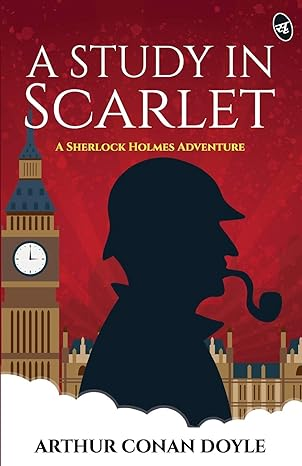
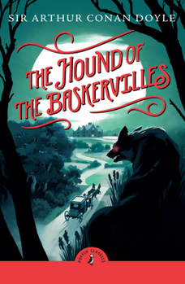
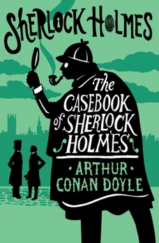
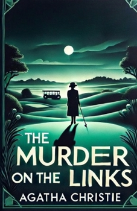
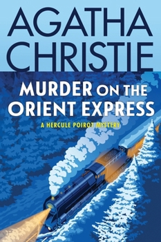
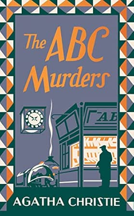

Book Recommendations






I recommend these books as not only riveting tales of twists and turns but also, brilliant examples of the abilities of our two detectives. These stories showcase the true dedication and brilliance of Holmes and Poirot.